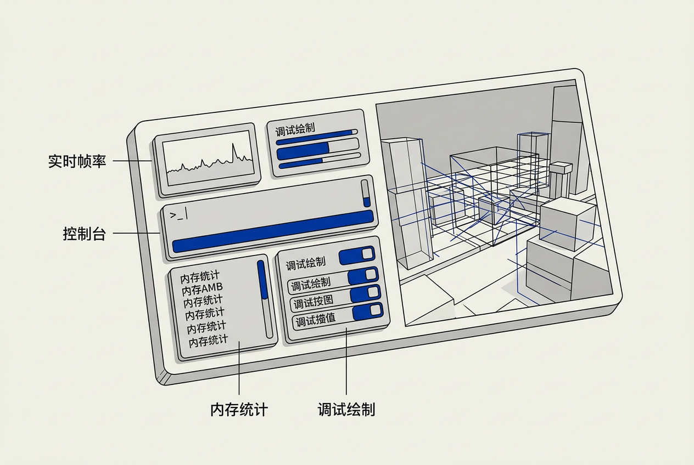

第10章：调试与开发工具 — 零基础讲义
讲义说明
本讲义基于 Jason Gregory 所著《Game Engine Architecture Volume I》第4版第10章（Tools for Debugging and Development, p.551-584），逐节翻译推导，深入讲解游戏引擎内置的调试基础设施——从日志系统到 crash reporter 的完整工具链。
本版插画由 ImageGen + Guizang 材质插画标准流程生成。
学习目标
- 理解游戏引擎为什么需要内置调试工具（而非只靠外部调试器）
- 掌握日志系统、调试绘制、游戏内控制台、Cheat 系统的设计与实现
- 理解性能剖析、内存调试、Crash 报告的工作原理
- 了解录制与回放系统如何用于复现和调试 bug
- 建立"调试工具是开发基础设施，不是事后补丁"的工程思维
10.1 日志与追踪
生活类比： 日志系统就像飞机的黑匣子——飞行过程中持续记录关键参数（高度/速度/舵面位置/驾驶舱语音），一旦出事故，黑匣子是事故分析的第一手数据。游戏引擎的日志系统同样如此：崩溃后你打开日志文件，就能看到崩溃前引擎的状态变化，这是调试的起点。
10.1.1 为什么需要日志？
10.1.1.1 传统 printf 调试的局限
初学编程时你可能用 printf("here!\\n") 来调试。但实际游戏引擎中这不管用：① 游戏全屏运行，控制台看不见；② 打印几千条后性能暴跌；③ 崩溃时最后几条日志可能还在缓冲区没刷到文件。
10.1.1.2 日志的四大核心功能
| 功能 | 说明 | 典型场景 |
|---|---|---|
| 状态追踪 | 记录引擎运行的阶段性状态 | "资源加载完成"、"关卡初始化完成" |
| 错误诊断 | 记录错误信息和调用栈 | "纹理加载失败: textures/hero.png" |
| 性能监控 | 记录关键操作的耗时 | "Physics Update: 2.3ms" |
| 事后分析 | 崩溃后回溯事发前的状态 | 玩家提交的崩溃日志 |
10.1.2 日志的设计架构
10.1.2.1 日志级别（Severity Levels）
不是所有日志都一样重要。引擎需要分级，让用户可以选择看到多少信息。
// 常见日志级别（从最不重要到最重要）
enum LogLevel {
LOG_VERBOSE = 0, // 极其详细的调试信息（"进入函数 X"）
LOG_DEBUG = 1, // 开发调试信息（"变量 Y = 42"）
LOG_INFO = 2, // 一般性信息（默认显示的运行状态）
LOG_WARNING = 3, // 警告（"纹理分辨率过高，建议压缩"）
LOG_ERROR = 4, // 错误（"加载资源失败"）
LOG_FATAL = 5, // 致命错误（"无法初始化渲染器"）
};10.1.2.2 Channel / Category 分类
除了级别，还需要分类（Channel），方便按模块过滤。例如：
LogChannel channel_Render = RegisterChannel("Render");
LogChannel channel_Physics = RegisterChannel("Physics");
LogChannel channel_Network = RegisterChannel("Network");
// 使用示例
LOG(LOG_WARNING, channel_Render, "Shader compile failed: %s", shaderName);
LOG(LOG_INFO, channel_Physics, "Step took %.2f ms", dt*1000);
// 运行时开关：只显示 Physics 和 Network 的错误级以上的日志
LogSystem.SetChannelFilter("Render", LOG_ERROR);
LogSystem.SetChannelFilter("Physics", LOG_WARNING);
LogSystem.SetChannelFilter("Network", LOG_DEBUG);10.1.2.3 输出目标（Sinks）
日志不是只能写到文件。现代引擎的日志系统支持多个输出目标同时写入：
| Sink 类型 | 说明 | 用途 |
|---|---|---|
| FileSink | 写入磁盘文件（带时间戳命名） | 事后分析 |
| ConsoleSink | 输出到游戏内置控制台 | 实时调试 |
| DebuggerSink | 输出到 IDE 的 Output Window | 开发中调试 |
| NetworkSink | 通过网络发给远程日志服务器 | 线上玩家日志收集 |
| TelemetrySink | 发送给数据分析平台 | 运营数据分析 |
// 添加多个 Sink
LogSystem.AddSink(new FileSink("logs/game_%date%.log"));
LogSystem.AddSink(new ConsoleSink()); // 游戏内控制台
LogSystem.AddSink(new DebuggerSink()); // IDE 输出窗口
// FileSink 特有的功能：日志轮转
// 最多保留 10 个日志文件，每个最大 10MB
FileSink.SetRotation(10, 10 * 1024 * 1024);10.1.2.4 异步日志与环形缓冲
直接写磁盘会阻塞游戏线程（等待 I/O 完成），导致帧率波动。专业引擎使用异步日志：
// 异步日志架构
void LOG(LogLevel level, LogChannel ch, const char* fmt, ...) {
// 1. 格式化日志消息（游戏线程，很快）
char msg[4096];
vsnprintf(msg, sizeof(msg), fmt, va_args);
// 2. 放入无锁环形缓冲区（游戏线程）
ringBuffer.Push({level, ch, timestamp, msg});
// 3. 日志线程从缓冲区取走并写入磁盘（异步，不阻塞游戏）
// 另一个线程在循环: ringBuffer.Pop() → FileSink.Write()
}
// 崩溃时的兜底策略：强制刷新缓冲区
void OnCrash() {
ringBuffer.FlushToFile(); // 把还没写的内容赶紧刷到文件
}两种策略：① 丢弃最早的日志（覆盖写入，牺牲旧数据）；② 丢弃最新的日志（保留崩溃前信息，牺牲新数据）。游戏引擎通常选②，因为崩溃前最后几条日志是最珍贵的——"死前遗言"比"三千年前的流水账"更有价值。更好的是增大缓冲区或使用动态分配。
10.1.3 调用栈追踪（Stack Trace）
10.1.3.1 为什么日志需要附带调用栈？
单行错误信息"Assertion failed: ptr != nullptr"几乎没有调试价值——你需要知道谁调用了谁最终导致了这个空指针。这就是调用栈的用途。
10.1.3.2 实现方式
// Windows: 使用 StackWalk64 API
void PrintStackTrace() {
void* stack[64];
WORD frames = CaptureStackBackTrace(0, 64, stack, NULL);
// 符号解析（需要 PDB 文件 / 调试符号）
SYMBOL_INFO* symbol = ...;
for (int i = 0; i < frames; i++) {
SymFromAddr(process, (DWORD64)stack[i], 0, symbol);
printf(" %s + 0x%x\n", symbol->Name, offset);
}
}
// 输出示例：
// GameEngine.dll!Physics::Step() + 0x42
// GameEngine.dll!GameLoop::Update() + 0x1A
// GameEngine.dll!WinMain() + 0x8F
// Game.exe!main() + 0xBC10.1.3.3 PDB / DWARF 符号文件
编译后的二进制文件不包含函数名（都是地址）。PDB（Windows）/ DWARF（Linux/Mac）是"地址→函数名→源文件行号"的映射表。没有符号文件，调用栈就是一串毫无意义的十六进制地址。
发布给玩家的版本通常剥离符号（减小体积+防止逆向工程），但内部保留一份带符号的副本用于分析玩家提交的崩溃日志。
10.2 调试绘制

生活类比： 调试绘制就像给游戏世界加了一层"X光眼镜"。正常情况下你看到的是精美的渲染画面（皮肤），但你戴上眼镜后能看到骨骼结构、碰撞体、寻路网格、视野锥等底层数据——这些是设计师和程序员真正需要看的"真相"。
10.2.1 调试绘制的常用元素
10.2.1.1 基础图元
| 图元 | 典型用途 | API 示例 |
|---|---|---|
| 线条（Line） | 寻路路径、射线检测方向 | DebugDraw::Line(A, B, colorRed) |
| 球体（Sphere） | 触发器范围、声音衰减半径 | DebugDraw::Sphere(center, radius, colorGreen) |
| 盒子（Box） | 碰撞盒、OBB 包围盒 | DebugDraw::Box(min, max, colorYellow) |
| 圆柱/胶囊（Capsule） | 角色碰撞体 | DebugDraw::Capsule(top, bottom, r, colorOrange) |
| 锥体（Cone） | AI 视野锥、灯光锥体 | DebugDraw::Cone(origin, dir, angle, colorCyan) |
| 文字（Text） | HP值、AI状态、性能数字 | DebugDraw::Text3D(pos, "HP:%d", hp) |
10.2.1.2 实现方式：即时模式 vs 持久模式
// 即时模式（Immediate Mode）：每帧重新提交所有绘制命令
void RenderDebugDraw() {
for (auto& box : collisionWorld.GetAllBoxes())
DebugDraw::WireBox(box.min, box.max, Color::Yellow);
for (auto& path : navigation.GetActivePaths())
DebugDraw::Polyline(path.points, Color::Cyan);
// 本帧结束时，所有调试绘制被清空 —— 下一帧要全部重新提交
}
// 持久模式（Persistent）：对象注册自己，每帧自动绘制
class DebugDrawComponent : Component {
float drawDuration; // 显示时长（秒），过期自动移除
};
// 优势：不需要每帧重新提交，只需注册一次
// 劣势：需要管理生命周期、消耗额外内存即时模式适合"动态变化"的数据（如 AI 寻路路径——每帧都在变，重新提交即可）。持久模式适合"相对稳定"的数据（如 AI 视野锥——注册一次持续显示，关了再删）。现代引擎通常两者都支持。
10.2.2 渲染方式
10.2.2.1 线框覆盖（Overlay）
最常见的做法：在正常渲染之后，用单独的 pass 叠加线框图元。使用深度测试确保被遮挡的图元以半透明或虚线显示。
10.2.2.2 GPU 图元生成
不要用 CPU 生成每个线条的顶点——提交几千条线就会压垮 CPU。使用几何着色器（Geometry Shader）或计算着色器在 GPU 上生成调试图元：CPU 只提交"在这里画一个球"的元命令，GPU 自己生成球的线框顶点。
// CPU 端：只提交元命令（极快）
struct DebugCommand {
DebugPrimitiveType type; // Line/Sphere/Box/Capsule/Cone
Matrix4 transform;
Color color;
float duration;
};
std::vector commands; // 每帧几十到几百条
// GPU 端：几何着色器根据 type 生成实际的线框顶点
// 一个 sphere 命令 → GPU 生成 48 条经纬线 → 渲染 10.2.3 常见的调试可视化
10.2.3.1 碰撞可视化
以半透明彩色线框显示所有碰撞体——这是调试物理问题的第一工具。"为什么子弹穿透了墙壁？"——打开碰撞可视化，你立刻能看到碰撞体是否在正确位置。
10.2.3.2 AI 可视化
显示 AI 的寻路路径（连线）、视野锥（透明锥体）、听觉范围（球体）、当前行为状态（3D 文字标注）。这是调试 AI "为什么敌人看不见我"的必备工具。
10.2.3.3 光照可视化
显示光源的影响范围、阴影投射方向、光照探针（Light Probe）的位置和值。调试"这里为什么这么暗"时非常直观。
10.2.3.4 NAX 网格可视化
用彩色网格覆盖可通行区域——绿色=可行走，红色=阻挡，黄色=跳落边缘。这是关卡设计师调整地图布局的核心视图。
10.3 游戏内置控制台
生活类比： 游戏内控制台就像汽车的 OBD（车载诊断）接口——维修技师插上诊断仪，就能读取引擎转速、水温、故障码，甚至发送指令（如"关闭第3缸喷油嘴"来测试）。游戏控制台同理：按 `~` 键打开，输入命令就能修改游戏世界的任何参数。
10.3.1 控制台的基本架构
10.3.1.1 CVar 系统
CVar（Console Variable）是控制台系统的核心——它是一个全局变量，可以通过控制台实时读写。
// 声明一个 CVar
CVar g_playerSpeed("player.speed", 5.0f,
"Player movement speed in m/s");
CVar g_showCollision("debug.collision", false,
"Show all collision shapes");
CVar g_maxEnemies("game.maxEnemies", 100,
"Maximum number of spawned enemies");
// 游戏逻辑中使用
void Player::Move(Vector3 dir) {
float speed = g_playerSpeed.Get(); // 从 CVar 读取
position += dir * speed * dt;
}
// 渲染调试绘制
void RenderDebug() {
if (g_showCollision.Get())
DrawAllCollisionShapes();
} 10.3.1.2 控制台命令处理
玩家在控制台输入文字后，引擎解析并执行：
// 控制台命令解析流程
输入: "player.speed 10.0"
↓ 分词（Tokenize）
["player.speed", "10.0"]
↓ 查找 CVar（哈希表 O(1)）
CVarRegistry["player.speed"]
↓ 类型解析 + 赋值
g_playerSpeed = 10.0f
↓ 输出确认
控制台打印: "player.speed = 10.0"10.3.1.3 控制台命令（Console Command）与 CVar 的区别
| CVar | Console Command | |
|---|---|---|
| 本质 | 一个全局变量 | 一个函数调用 |
| 示例 | player.speed 10.0 | quit, restart, load map01 |
| 读/写 | 可读可写（赋值） | 只写（执行函数） |
| 实现 | 模板+注册宏 | 函数指针+注册宏 |
// 注册一个控制台命令
ConsoleCommand("reload_shaders", [](){
Renderer::ReloadAllShaders();
Log("All shaders reloaded.");
});
// 注册带参数的命令
ConsoleCommand("spawn_enemy", [](const Args& args){
if (args.size() < 1) { Log("Usage: spawn_enemy "); return; }
EnemyType type = ParseEnemyType(args[0]);
World::SpawnEnemy(type, player.position + Vector3(5,0,0));
Log("Spawned enemy: %s", args[0].c_str());
}); 10.3.2 自动完成与历史记录
10.3.2.1 Tab 补全
输入 "play" 按 Tab → 列出 "player.speed / player.jumpHeight / player.fov"。实现：前缀树（Trie）或简单的有序列表+二分查找。
10.3.2.2 命令历史
按上下方向键浏览历史命令（环形缓冲区，存最近 200 条）。这是程序员最高频的操作——"改一个参数→看效果→上箭头→改参数→回车"。
10.3.3 远程控制台
开发主机游戏时，想输入命令需要把键盘接到开发机（DevKit）上——非常不方便。远程控制台让 PC 上的工具通过 TCP/IP 连接到运行在主机上的游戏，像 SSH 一样发送命令。
// 远程控制台的简单实现
class RemoteConsoleServer {
void Start(int port) {
// 监听 TCP 端口，等待 PC 工具连接
tcpListener.Bind(port);
while (running) {
auto client = tcpListener.Accept();
std::string cmd = client.ReceiveLine();
ConsoleEngine.Execute(cmd); // 在游戏内执行
client.Send(ConsoleEngine.GetOutput()); // 返回结果
}
}
};10.4 Cheat 与作弊码系统
生活类比： Cheat 系统就像你玩游戏时开了"上帝模式"——但实际上它首先是给开发者用的。设计师测试 Boss 战，不想每次都从头打到 Boss，于是用一个 cheat 把自己传送到 Boss 房间，再开一个 cheat 让角色无敌。Cheat 本质是开发效率工具，只不过有时候也开放给玩家当彩蛋。
10.4.1 Cheat 的三种形态
10.4.1.1 控制台命令型
最简单的 cheat：就是一条控制台命令。
ConsoleCommand("god", [](){ player.invincible = true; });
ConsoleCommand("noclip", [](){ player.collisionEnabled = false; });
ConsoleCommand("give_gold", [](Args& a){ if(a.size()>=1) player.gold += a[0]; });10.4.1.2 按键组合型（Konami Code）
经典的 ↑↑↓↓←→←→BA。这是一个简单的状态机——每次按键，检查是否匹配预期序列的下一个。
// Konami 检测的状态机
enum { STATE_START, STATE_UP1, STATE_UP2, STATE_DOWN1, STATE_DOWN2,
STATE_LEFT1, STATE_RIGHT1, STATE_LEFT2, STATE_RIGHT2,
STATE_B, STATE_A, STATE_DONE };
int cheatState = STATE_START;
void OnKeyPressed(KeyCode key) {
static KeyCode sequence[] = {UP,UP,DOWN,DOWN,LEFT,RIGHT,LEFT,RIGHT,B,A};
if (key == sequence[cheatState]) {
cheatState++;
if (cheatState == STATE_DONE) {
Log("Cheat activated: 30 lives!");
player.lives = 30;
cheatState = STATE_START; // 重置状态机
}
} else {
cheatState = STATE_START; // 错了就从头开始
}
}10.4.1.3 调试菜单型
最完整的形式：一个半透明的浮动菜单，列出所有可用的 Cheat，设计师可以开关和调节数值。Unreal Engine 的控制台命令窗口本身就是这个——` 键打开，输入命令+参数。此外我们还有菜单：
// 一个简单的 ImGui 调试菜单
void ShowDebugMenu() {
if (ImGui::Begin("🎮 Cheat Menu")) {
ImGui::Checkbox("God Mode", &player.invincible);
ImGui::Checkbox("No Clip", &player.noCollision);
ImGui::SliderFloat("Speed Multi", &player.speedMult, 0.1f, 10.0f);
if (ImGui::Button("Give All Weapons"))
player.GiveAllWeapons();
if (ImGui::Button("Spawn 10 Enemies"))
for (int i=0; i<10; i++) SpawnRandomEnemy();
if (ImGui::Button("Teleport to Boss Room"))
player.Teleport(bossRoomSpawn);
}
ImGui::End();
}10.4.2 Cheat 系统的设计原则
10.4.2.1 开发构建 vs 发布构建
Cheat 绝对不应该出现在发布给玩家的版本中。 使用预处理器宏或编译开关剥离所有 Cheat 代码：
#if ENABLE_CHEATS
ConsoleCommand("god", [](){ player.invincible = true; });
ConsoleCommand("give_gold", GiveGold);
#endif
// 发布构建：
// #define ENABLE_CHEATS 0 → 所有 cheat 代码在编译时彻底移除10.4.2.2 联网游戏中的 Cheat
这是严肃的安全问题。如果客户端能通过 Cheat 让自己无敌，那么在线多人游戏就完全被破坏了。解决方案：
- 服务器权威（Server-Authoritative）： Cheat 只在开发构建的本地游戏中可用。线上游戏的所有关键逻辑由服务器验证，客户端不能单方面改变自己状态。
- 开发用专用服务器： 内部测试时使用独立的服务器（不对外开放），允许 Cheat。
因为控制台代码依然存在（方便 QA 和开发团队测试），但发布时隐藏了 `~` 键的绑定，或者加了启动参数 `-dev` 才能开启。这样做的好处是：同一个二进制既能在内部测试（加 `-dev` 参数），又能安全发布给玩家。
10.5 性能剖析
生活类比： 性能剖析就像去医院做全身 CT 扫描——你感觉"游戏有点卡"，但不知道具体卡在哪。Profiler 就是一帧一帧地扫描，精确到每个函数的耗时，把"感觉"变成"数据显示：Physics::Step() 占用了 14ms"。之后你才知道该优化什么。
10.5.1 Profiler 的核心概念
10.5.1.1 插桩（Instrumentation）
在代码中插入计时代码，记录每个函数的开始时间和结束时间。
// 手动插桩宏
void GameLoop::Update(float dt) {
PROFILE_SCOPE("GameLoop::Update"); // 自动记录本函数耗时
{
PROFILE_SCOPE("Physics Step");
physicsWorld.Step(fixedStep);
} // 离开作用域时自动记录 Physics Step 耗时
{
PROFILE_SCOPE("AI Update");
aiManager.Update(dt);
}
{
PROFILE_SCOPE("Animation Update");
animSystem.Update(dt);
}
}
// PROFILE_SCOPE 的实现（简化版）
class ProfileScope {
const char* name;
uint64_t startTime;
public:
ProfileScope(const char* n) : name(n) {
startTime = __rdtsc(); // 读取 CPU 时间戳计数器
}
~ProfileScope() {
uint64_t elapsed = __rdtsc() - startTime;
Profiler::Record(name, elapsed); // 记录到全局 Profiler
}
};
#define PROFILE_SCOPE(name) ProfileScope __ps_##__LINE__(name)10.5.1.2 CPU Profiler 的几种流派
| 方式 | 原理 | 优点 | 缺点 |
|---|---|---|---|
| 手动插桩 | 代码中加 PROFILE_SCOPE | 精确、有上下文 | 需要改代码 |
| 采样（Sampling） | 每毫秒中断一次，看当前 IP 指向哪个函数 | 无需改代码 | 只能统计、无法记录单次耗时 |
| 编译器插桩 | 编译器自动在每个函数入口/出口加代码 | 全覆盖、无需手动 | 开销大（每个函数调用都计时） |
| 硬件计数器 | 读取 CPU 的 PMC 寄存器（cache miss/分支预测失败等） | 硬件级精度 | 不同 CPU 型号不同 |
10.5.2 帧分析器（Frame Profiler）
10.5.2.1 时间线视图
最直观的性能工具——把一帧的函数调用展开在时间轴上，像甘特图一样。哪个函数"横棍"最长，哪个就是瓶颈。
// 一帧的简化的 Timeline 输出
|0ms |16.7ms|
[===Render::Culling(3.2ms)==================]
[==Render::Submit(0.8ms)===]
[Physics::Step(7.4ms)=====================]
[AI::Update(2.1ms)=======]
[Audio::Mix(1.2ms)==]
// 一眼看出：Physics::Step 占 7.4ms，是最大瓶颈10.5.2.2 层级视图（Hierarchical View）
函数调用树，显示每个函数的自身耗时（Exclusive）和含子函数的总耗时（Inclusive）：
GameLoop::Update 16.0ms (Inclusive)
├── Render::Render 6.2ms
│ ├── Culling 3.2ms → 瓶颈！
│ ├── Submit 0.8ms
│ └── GPU Wait 2.2ms
├── Physics::Step 7.4ms → 最大瓶颈！
│ ├── BroadPhase 1.1ms
│ ├── NarrowPhase 5.8ms → 子瓶颈
│ └── Solver 0.5ms
└── AI::Update 2.4ms
├── Pathfinding 1.8ms
└── BehaviorTree 0.6ms10.5.3 GPU Profiler
10.5.3.1 GPU 时间戳查询
GPU 和 CPU 是异步的——你无法简单地在 CPU 上计时 GPU 操作。需要使用 Query Timestamp：在 GPU 命令流中插入时间戳标记，GPU 执行到该标记时把当前 GPU 时间写入结果缓冲。
// GPU Profiler 的原理
ID3D11Query* queryStart, queryEnd;
context->Begin(queryStart); // 在 GPU 命令流中放一个"计时开始"标记
context->DrawIndexed(...); // 真正要计时的绘制命令
context->End(queryEnd); // 放一个"计时结束"标记
// 稍后（一两帧后）读取结果
UINT64 startTime, endTime;
context->GetData(queryStart, &startTime, ...);
context->GetData(queryEnd, &endTime, ...);
float gpuMs = (endTime - startTime) / gpuFrequency * 1000.0f;10.5.3.2 PIX / RenderDoc 等外部 GPU 调试器
引擎内嵌的 GPU Profiler 有一定局限。真正深入的 GPU 调试需要外部工具：Microsoft PIX（Xbox/Windows）、RenderDoc（跨平台）、NVIDIA Nsight。这些工具可以捕获一帧的所有 Draw Call、Shader、纹理、渲染目标——逐 Event 查看每一步的输出。
插桩本身有开销——每进入/退出一个函数都要读 CPU 时间戳+写入 Profiler 缓冲区。如果几千个函数同时插桩，Profiler 自身的开销可能达到 5-10%，严重干扰测量结果（"测量行为改变了被测量对象"）。商业引擎通常只在开发构建中默认开启轻量 Profiler，详细 Profiler 需要手动开关。
10.6 内存调试
生活类比： 内存调试就像警犬追踪气味——内存泄漏是"丢失的东西"，内存调试工具就是让你追踪每一块分配出去的内存"去了哪里、谁用了它、用完了没有还回来"。
10.6.1 内存泄漏检测
10.6.1.1 什么是内存泄漏？
分配了内存但从不释放。在游戏循环中，即使每次只泄漏 1KB，一分钟后就是 3.6MB，十分钟就是 36MB——很快把可用内存吃光，导致崩溃。
10.6.1.2 自定义分配器的泄漏检测
// 带跟踪的自定义分配器
struct TrackedAllocation {
void* ptr;
size_t size;
const char* file; // __FILE__
int line; // __LINE__
uint64_t timestamp;
};
class DebugAllocator {
std::unordered_map allocations;
void* Allocate(size_t size, const char* file, int line) {
void* ptr = malloc(size);
allocations[ptr] = {ptr, size, file, line, GetTime()};
return ptr;
}
void Deallocate(void* ptr) {
allocations.erase(ptr); // 正常释放：删掉记录
free(ptr);
}
void DumpLeaks() {
for (auto& [ptr, info] : allocations) {
Log("LEAK: %zu bytes at %p, allocated at %s:%d, age=%llu ms",
info.size, info.ptr, info.file, info.line,
GetTime() - info.timestamp);
}
}
};
// 用宏替换全局 new/delete
#define new new(__FILE__, __LINE__)
#define delete DebugAllocator::TrackDelete
// 崩溃或游戏退出时，调用 DumpLeaks() 列出所有未释放的内存 10.6.1.3 工具替代方案
自己写内存跟踪器费时费力。实践中通常用现成工具：
- Visual Studio CRT 调试堆：
_CrtSetDbgFlag(_CRTDBG_ALLOC_MEM_DF | _CRTDBG_LEAK_CHECK_DF) - Valgrind（Linux）： 运行时检测，无需重新编译，但速度慢 10-50 倍
- AddressSanitizer（ASan）： 编译器内置（GCC/Clang/MSVC），编译时插桩，检测越界/use-after-free/泄漏，运行时开销约 2x
10.6.2 内存越界检测
10.6.2.1 越界的危险
写入超出分配范围的内存——这是 C/C++ 中最危险的 bug 类型之一。它不会立即崩溃（可能覆盖了其他数据），可能在数分钟后才以完全无关的方式崩溃，极难定位。
10.6.2.2 金丝雀值（Canary Value）
// 在分配的内存块两端放置"金丝雀"（固定的魔术数字）
// 释放时检查金丝雀是否被修改——如果被改了，说明发生了越界写入
struct GuardedBlock {
static const uint32_t CANARY = 0xDEADBEEF;
uint32_t headCanary; // 块头保护
uint8_t userData[...]; // 用户数据
uint32_t tailCanary; // 块尾保护
};
void* GuardedAlloc(size_t userSize) {
auto* block = malloc(sizeof(GuardedBlock) + userSize);
block->headCanary = CANARY;
block->tailCanary = CANARY;
return block->userData;
}
void GuardedFree(void* ptr) {
auto* block = GetBlockFromPtr(ptr);
assert(block->headCanary == CANARY && "HEAD BUFFER OVERRUN!");
assert(block->tailCanary == CANARY && "TAIL BUFFER OVERRUN!");
free(block);
}10.6.2.3 Page Guard 技术
更狠的方法：把每个分配放在一个独立的内存页中，在页末尾设置一个不可访问的保护页。任何越界写入都会立即触发 access violation（硬件异常，精确到越界位置）。代价是内存碎片严重——每个分配至少占用两个页（8KB~1MB）。
10.6.3 内存碎片分析
10.6.3.1 碎片的定义
内存碎片 = 总空闲内存足够，但没有一块连续的空闲区域足够大。
// 碎片可视化（16KB 总内存）
// [已用2KB][空闲1KB][已用3KB][空闲1KB][已用4KB][空闲1KB][已用4KB]
// 总空闲: 3KB — 但想分配一个连续的 2KB 块？不可能！因为 3 个空闲块是分散的
// 解决方案：
// 1. 池分配器（每种大小的对象用独立的池）
// 2. 定期整理碎片（移动已分配的块——需要支持指针重定向）
// 3. 使用不同的分配策略（Best-fit / First-fit / Buddy allocator）10.7 Crash 报告
生活类比： Crash Reporter 就像汽车的安全气囊传感器+行车记录仪的组合——撞车后，安全气囊触发的同时，记录仪保存了碰撞前 30 秒的录像。Crash Reporter 在游戏崩溃时做同样的事：捕获崩溃瞬间的状态并打包发送给开发团队。
10.7.1 Crash Reporter 的工作原理
10.7.1.1 结构化异常处理（SEH / Signal Handler）
// Windows SEH（Structured Exception Handling）
__try {
// 游戏主循环
RunGameLoop();
}
__except(CrashHandler(GetExceptionInformation())) {
// 崩溃了：收集信息 → 生成报告 → 安全退出
}
// POSIX (Linux/Mac) Signal Handler
signal(SIGSEGV, CrashHandler); // 段错误
signal(SIGABRT, CrashHandler); // abort()
signal(SIGFPE, CrashHandler); // 除零错误
void CrashHandler(int signal) {
// 注意：崩溃处理器中能做的事情极其有限！
// 不能分配内存（malloc 可能死锁）
// 不能抛出异常（栈可能已损坏）
// 只能：读已有数据、写已打开的文件、调用安全的系统 API
WriteMinidump(); // 写入小型崩溃转储
FlushLogBuffers(); // 刷新日志缓冲区
ShowCrashDialog(); // 显示"游戏崩溃了"对话框
_exit(1); // 立即退出（不能 return，栈已死）
}10.7.1.2 Minidump（小型转储）
Minidump 是 Windows 上最常用的崩溃转储格式。它不保存完整内存镜像（那可能好几 GB），而是按需保存：
| 数据 | 大小 | 用途 |
|---|---|---|
| 调用栈（所有线程） | ~几KB | 确定崩溃位置 |
| 寄存器状态 | ~几百字节 | 分析崩溃时的 CPU 状态 |
| 已加载模块列表 | ~几KB | 匹配符号文件 |
| 部分堆内存 | 可选（几MB~几百MB） | 分析内存状态 |
// 写入 Minidump
void WriteMinidump(EXCEPTION_POINTERS* exceptionInfo) {
HANDLE hFile = CreateFile("crash_%timestamp%.dmp", ...);
MINIDUMP_EXCEPTION_INFORMATION mei = { GetCurrentThreadId(), exceptionInfo };
MiniDumpWriteDump(
GetCurrentProcess(), GetCurrentProcessId(), hFile,
MiniDumpNormal, // 小型转储（仅调用栈+寄存器）
&mei,
nullptr, // 用户自定义数据流
nullptr); // 回调
}10.7.2 Crash 报告的内容
10.7.2.1 一份好的 Crash 报告应包含
- Minidump 文件： 调用栈+寄存器+模块列表（~100KB）
- 崩溃前的日志： 环形缓冲区中的最后 N 条日志
- 系统信息： OS 版本、CPU 型号、GPU 型号、驱动版本、内存总量/可用量
- 游戏状态： 当前关卡、玩家位置、运行时长、帧率
- 用户操作记录： 崩溃前 30 秒的输入事件
- 截图（可选）： 崩溃时的最后一帧画面
10.7.2.2 隐私与合规
向开发团队发送崩溃报告时需要用户同意（GDPR / 隐私法规要求）。通常游戏会弹出对话框："游戏崩溃了，是否发送错误报告？（报告仅包含技术信息，不包含个人数据）"
因为崩溃可能恰好发生在 malloc 内部（比如堆元数据损坏），此时 malloc 的内部锁可能已经被持有且永远不会释放。再次调用 malloc 会永久死锁——进程直接卡死，连崩溃报告都写不出来。因此 Crsh Handler 只能使用预分配的内存和已经打开的文件句柄。
10.7.3 崩溃报告的收集与分析
10.7.3.1 符号服务器（Symbol Server）
收到的 Minidump 里都是十六进制地址。你需要用符号文件（PDB）把地址翻译成函数名和行号。
// 没有符号：调用栈是
// 0x00007FF6A1B23F4A
// 0x00007FF6A1B23F8C
// → 完全没用
// 有符号：调用栈是
// GameEngine.dll!Physics::NarrowPhase::CollidePair() + 0x42 (Physics.cpp:234)
// GameEngine.dll!Physics::Step() + 0x1A (Physics.cpp:156)
// → 一目了然！现代 CI/CD 管线在每次构建后自动将 PDB 上传到符号服务器，确保任何一次发布的版本都有对应的符号文件。
10.7.3.2 崩溃聚合（Crash Aggregation）
一万个玩家报告了崩溃——你怎么知道是同一个 bug 还是十个不同的 bug？崩溃聚合通过崩溃调用栈的"指纹"（如取栈顶 3 个函数名做 hash）自动分类。出现频率高的聚合桶优先修复。
10.8 录制与回放
生活类比： 录制系统就像游戏的"行车记录仪 + 倒带功能"。赛车游戏在你过弯失败时自动保存之前 10 秒的完整操作，你可以倒回去从任意角度观看。更重要的是，它能精确重现那个 bug——你拿到一份玩家的录制文件，在自己的开发机上播放，就能看到玩家当时看到的完全相同的一幕。
10.8.1 录制的基本原理
10.8.1.1 确定性录制
核心思想：不录画面（视频），而是录制输入和初始状态。因为游戏是确定性的——同样的初始状态 + 同样的输入序列 → 同样的结果。
// 录制：只记录输入事件
struct ReplayFrame {
uint32_t frameNumber;
float deltaTime;
InputState inputs; // 所有玩家输入
uint32_t randomSeed; // 随机种子
};
std::vector recording;
void RecordFrame() {
recording.push_back({
GetFrameNumber(),
GetDeltaTime(),
Input::CaptureState(),
Random::GetSeed()
});
} 10.8.1.2 回放：用同样的输入驱动同样的逻辑
// 回放：用录制好的输入"重放"整个游戏
void Playback() {
Random::SetSeed(recording[0].randomSeed); // 设置初始种子
World::LoadLevel(recording[0].levelName); // 加载初始关卡
for (auto& frame : recording) {
Input::OverrideState(frame.inputs); // 用录制的输入替代真实输入
World::Update(frame.deltaTime); // 运行一帧——和录制时完全一样！
World::Render();
}
}10.8.2 破坏确定性的因素（及解决方案）
10.8.2.1 主要破坏因素
| 破坏因素 | 原因 | 解决方案 |
|---|---|---|
| 浮点运算 | 不同 CPU 的浮点结果可能差最后一两位 | 固定随机种子；或用定点数 |
| 多线程 | 线程调度顺序影响运算顺序 | 录制时禁用多线程；或记录线程调度结果 |
| 时间 | 读取系统时间作为游戏逻辑输入 | 回放时用录制的帧序号替代系统时间 |
| 网络 | 网络包到达顺序不可预测 | 录制时记录所有网络包的顺序和内容 |
| 未初始化变量 | 读到未初始化的内存（UB） | 这本身就是 bug——录制反而能帮你发现它 |
10.8.2.2 录制系统的规模
一分钟的 60fps 录制 = 3600 帧 × ~100字节/帧 = ~360KB。非常小！即使录一个小时也只有 ~20MB。这就是为什么录制输入比录制视频（一分钟 1080p = ~200MB）高效得多。
10.8.3 录制在调试中的应用
10.8.3.1 必现 Bug 的神器
QA 说："有时候打完 Boss 后存档会崩溃。"——什么是"有时候"？什么时候发生的？怎么复现？
解决方案： 让 QA 始终开启录制。崩溃后，他们将最后一分钟的录制文件发给你。你在开发机上打开，启用所有调试工具（内存检测器、Profiler、断点），逐步回放——每一步都和 QA 看到的一模一样。
10.8.3.2 性能回归测试
录制一段"黄金路径"（Golden Path），每次代码提交后自动回放并对比帧率。如果某帧从 60fps 掉到 45fps，立即报警。
本章核心洞察
很多初学者以为调试工具是"出 bug 了临时写的"。实际上专业游戏引擎从项目第一天就开始构建调试基础设施——日志系统、控制台、Cheat、Profiler、Crash Reporter——因为团队所有人都要天天用这些工具。设计师用控制台传送到关卡各处，QA 用录制复现 bug，程序员用 Profiler 分析瓶颈。
三条黄金法则：
1. 日志是黑匣子： 崩溃后的第一手数据，日志系统必须健壮到崩溃时也能写完
2. Profiler 是 CT 扫描： 把"感觉卡"变成精确数据，优化的第一步永远是先测量
3. 录制 = 时间机器： 不用猜测 bug 怎么发生——倒回去看一眼就知道了
📝 课后练习题（含答案）
1. 日志级别（Severity）： 允许按重要性过滤。否则 VERBOSE 级别的日志会淹没真正的错误。
2. Channel 分类： 允许按模块过滤。调试物理 bug 时只想看 Physics 的日志。
3. 异步写入： 磁盘 I/O 太慢，不能阻塞游戏线程。
4. 多 Sink 支持： 同时写入文件（事后分析）、控制台（实时查看）、网络（远程调试）。
策略A（丢弃最旧）： 保留最新日志。适合"崩溃前最后几条最关键"的场景。但丢失了早期上下文。
策略B（丢弃最新）： 保留早期日志。保留完整上下文图景。但崩溃前的"死前遗言"丢失了。
实际中策略A更常见——崩溃瞬间的日志价值远高于几秒前的普通日志。更好的方案：加大缓冲区到能容纳 5-10 秒的日志。
即时模式： 每帧重新提交所有调试图元。下帧如果不提交就消失。适合每帧变化的动态数据（AI 路径、射线检测结果）。持久模式： 注册一次，对象持续绘制直到手动删除。适合相对稳定的数据（碰撞体显示、视野锥）。现代引擎通常两者都支持。
CVar（Console Variable）： 全局变量，可读可写。如 player.speed 10.0 —— 设置后游戏逻辑持续读取该值。
Console Command： 一次性函数调用。如 quit、restart、load map01。—— 执行后函数返回，不留下持久状态。实现上：CVar = 模板变量+注册；Command = 函数指针+注册。
风险： 如果客户端能通过 Cheat 修改自己的金币数/血量/速度，在线多人游戏就彻底崩了。解决方案： ① 服务器权威——所有关键状态由服务器计算和验证，客户端不能单方面修改。② Cheat 代码只在开发构建存在（#if ENABLE_CHEATS），发布时完全剥离。③ 内部测试用独立服务器，公网玩家无法连接。
手动插桩： 精确到函数、有调用层级、可知"单次调用了多久"。但需要改代码、只能插桩已知函数。采样 Profiler： 不需要改代码、可以覆盖所有函数（包括第三方库）。但只能统计"哪些函数占比高"，无法知道单次调用耗时。
用法： 日常开发用手动插桩（精确到函数+层级）；分析未知性能问题时先用采样找热点，再用插桩深入分析热点函数。
1. malloc： 崩溃可能就在 malloc 内部发生（堆损坏），此时 malloc 的锁可能已被持有且永不释放——再调用就死锁。2. 抛出异常： 栈可能已损坏，异常展开时二次崩溃。3. 创建线程： 内核对象表可能已损坏。4. 调用需要锁的函数： 任意一把锁都可能已被持有。
安全操作： 写已打开文件、读取已有内存、调用异步安全的系统 API（WriteFile、MiniDumpWriteDump、_exit）。
录制的是输入序列+初始状态，不是视频帧。每一帧只记录几十字节的输入数据（按键/摇杆/鼠标/随机种子）。回放时利用游戏的确定性——同样的输入+同样的初始状态 → 同样的结果。
录制：3600帧×60fps×~100字节 = ~360KB/分钟
视频：3600帧×1080p×每帧~3MB/压缩比30 = ~200MB/分钟
差距约 500 倍的原因是：视频录的是像素，录制录的是输入。
🤖 qAagent 零基础问答区
先加一个宏 PROFILE_SCOPE("MyFunction") 到你的主循环里的 5-6 个关键函数，运行游戏看哪个耗时最长。从"看见哪个函数花了多少毫秒"到"看懂层级关系"大约半小时就够了。深入分析（如理解 inclusive vs exclusive 时间）大约需要一两个小时。真正精通（分析 cache miss、分支预测失败、GPU stall）需要经验的积累。
推荐工具入门顺序：Unreal Insights（UE5内置）→ Tracy（开源、跨平台）→ Superluminal（收费但最好用）。
ASan 是编译时插桩工具，原理叫"影子内存"（Shadow Memory）：
1. 把进程的虚拟地址空间分为两部分——正常内存和"影子内存"（1:8 映射，每 8 字节正常内存对应 1 字节影子内存）
2. 影子内存记录对应的正常内存是否"可访问"
3. 每次内存访问前，编译器插入检查代码：查影子内存 → 如果不可访问 → 立即报告并终止
4. 释放的内存对应的影子内存被标记为"已释放"（特殊红区），后续访问就会触发检测
代价：内存占用增加 ~2x，运行速度降低 ~2x。只能在测试中使用，不适合发布。
Minidump（Windows）： 可配置要包含哪些数据。默认最小模式仅调用栈+寄存器（~100KB），可扩展到包含堆内存（几MB）。需要 PDB 符号文件才能解析。
Core Dump（Linux）： 默认是完整内存镜像（进程用了几GB就多大）。可配置大小限制。用 GDB 打开，需要带调试符号的二进制。
实际中： Minidump 小很多（用户上传快），是游戏行业的事实标准。Core Dump 更多用于服务器端崩溃分析。
这种情况通常是栈溢出或堆损坏严重到 SEH handler 本身也崩溃了。调试策略：
1. 连接调试器启动游戏——Visual Studio 的 "Debug → Attach to Process"
2. 或使用事后调试器（Post-Mortem Debugger）：Windows 的错误报告（WER）会自动保存崩溃进程的内存镜像。去 "控制面板→安全和维护→查看可靠性历史记录" 找到崩溃文件(.hdmp/.mdmp)，用 WinDbg 打开
3. 如果连这个都没有：启用Driver Verifier + Application Verifier（微软的运行时检测工具）来诱发更早的崩溃
4. 终极手段：二分法注释代码（注释掉一半→看还崩溃吗→逐步缩小范围）
会。调试绘制的线和文字也需要 GPU 处理，通常几千条线的开销可以忽略（<0.5ms），但几十万条就会显著增加帧时间。避免干扰的方式：
1. 在 Profiler 的时间线中 把 DebugDraw Pass 单独标记出来，分析时排除它
2. 用 GPU 图元生成（几何着色器）减少 CPU→GPU 的传输开销
3. 对调试绘制做 LOD——远处的图元简化或不绘制
4. 最关键：不要在看 Profiler 数据时大量开着调试绘制——测量时关闭，分析完了再打开看
这是录制系统最大的工程挑战。三种方案：
方案A（录制时禁用多线程）： 最简单，但性能倒退到单线程。
方案B（记录所有线程调度结果）： 录制时把每个 Job System 的作业分配顺序和结果都录下来，回放时强制复现同样的调度。缺点是录制数据量暴增。
方案C（锁定逻辑但释放渲染）： 只让游戏逻辑单线程确定性运行，渲染和物理可以多线程——这两个不参与"回放一致性"（回放时重新渲染就行）。这是最实用的折中方案。
两个原因：① 体积： 一个中型游戏的 PDB 可能几 GB，比游戏本身还大，玩家下载和安装会浪费大量带宽和磁盘。② 逆向工程风险： PDB 包含完整的函数名、变量名、源文件路径和行号——这是帮外挂开发者快速定位关键函数（如"GiveGold"、"IsInvincible"）。
正确做法： 每次构建的 PDB 上传到内部符号服务器；发布给玩家的版本剥离符号；Crash Reporter 收集到的 Minidump 在公司内网用符号服务器解析。
1. 日志是生命线： 崩溃后没有任何工具比你自己的日志系统更可靠。设计日志系统时假设它要在崩溃瞬间写完最后一行——异步+环形缓冲+Crash Flush。2. 永远先测量再优化： Profiler 把"感觉卡"变成精确数据。没有测量就动手优化 = 盲人摸象。3. 录制 = 时间机器： Bug 在玩家那里只发生了一次？让录制帮你回到那一刻，在开发机上精确重现。
- 学习目标
- 学习目标
- 10.1 日志与追踪
- 10.1.1 为什么需要日志？
- 10.1.1.1 传统 printf 调试的局限
- 10.1.1.2 日志的四大核心功能
- 10.1.2 日志的设计架构
- 10.1.2.1 日志级别（Severity Levels）
- 10.1.2.2 Channel / Category 分类
- 10.1.2.3 输出目标（Sinks）
- 10.1.2.4 异步日志与环形缓冲
- 10.1.3 调用栈追踪（Stack Trace）
- 10.1.3.1 为什么日志需要附带调用栈？
- 10.1.3.2 实现方式
- 10.1.3.3 PDB / DWARF 符号文件
- 10.2 调试绘制
- 10.2.1 调试绘制的常用元素
- 10.2.1.1 基础图元
- 10.2.1.2 实现方式：即时模式 vs 持久模式
- 10.2.2 渲染方式
- 10.2.2.1 线框覆盖（Overlay）
- 10.2.2.2 GPU 图元生成
- 10.2.3 常见的调试可视化
- 10.2.3.1 碰撞可视化
- 10.2.3.2 AI 可视化
- 10.2.3.3 光照可视化
- 10.2.3.4 NAX 网格可视化
- 10.3 游戏内置控制台
- 10.3.1 控制台的基本架构
- 10.3.1.1 CVar 系统
- 10.3.1.2 控制台命令处理
- 10.3.1.3 控制台命令（Console Command）与 CVar 的区别
- 10.3.2 自动完成与历史记录
- 10.3.2.1 Tab 补全
- 10.3.2.2 命令历史
- 10.3.3 远程控制台
- 10.4 Cheat 与作弊码系统
- 10.4.1 Cheat 的三种形态
- 10.4.1.1 控制台命令型
- 10.4.1.2 按键组合型（Konami Code）
- 10.4.1.3 调试菜单型
- 10.4.2 Cheat 系统的设计原则
- 10.4.2.1 开发构建 vs 发布构建
- 10.4.2.2 联网游戏中的 Cheat
- 10.5 性能剖析
- 10.5.1 Profiler 的核心概念
- 10.5.1.1 插桩（Instrumentation）
- 10.5.1.2 CPU Profiler 的几种流派
- 10.5.2 帧分析器（Frame Profiler）
- 10.5.2.1 时间线视图
- 10.5.2.2 层级视图（Hierarchical View）
- 10.5.3 GPU Profiler
- 10.5.3.1 GPU 时间戳查询
- 10.5.3.2 PIX / RenderDoc 等外部 GPU 调试器
- 10.6 内存调试
- 10.6.1 内存泄漏检测
- 10.6.1.1 什么是内存泄漏？
- 10.6.1.2 自定义分配器的泄漏检测
- 10.6.1.3 工具替代方案
- 10.6.2 内存越界检测
- 10.6.2.1 越界的危险
- 10.6.2.2 金丝雀值（Canary Value）
- 10.6.2.3 Page Guard 技术
- 10.6.3 内存碎片分析
- 10.6.3.1 碎片的定义
- 10.7 Crash 报告
- 10.7.1 Crash Reporter 的工作原理
- 10.7.1.1 结构化异常处理（SEH / Signal Handler）
- 10.7.1.2 Minidump（小型转储）
- 10.7.2 Crash 报告的内容
- 10.7.2.1 一份好的 Crash 报告应包含
- 10.7.2.2 隐私与合规
- 10.7.3 崩溃报告的收集与分析
- 10.7.3.1 符号服务器（Symbol Server）
- 10.7.3.2 崩溃聚合（Crash Aggregation）
- 10.8 录制与回放
- 10.8.1 录制的基本原理
- 10.8.1.1 确定性录制
- 10.8.1.2 回放：用同样的输入驱动同样的逻辑
- 10.8.2 破坏确定性的因素（及解决方案）
- 10.8.2.1 主要破坏因素
- 10.8.2.2 录制系统的规模
- 10.8.3 录制在调试中的应用
- 10.8.3.1 必现 Bug 的神器
- 10.8.3.2 性能回归测试
- 本章核心洞察
- 📝 课后练习题（含答案）
- 🤖 qAagent 零基础问答区